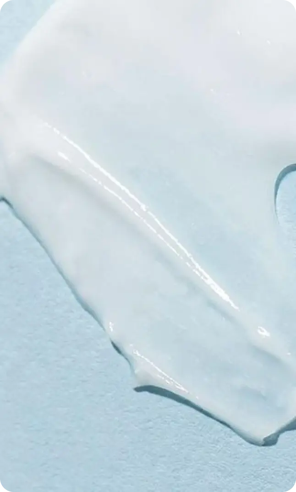
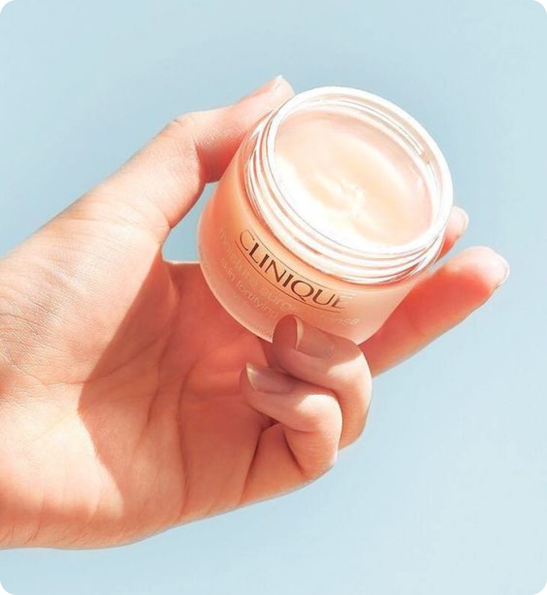

20 марта 2024
средства
Увлажнение — важный этап в уходовой рутине. Увлажняющие средства помогают бороться с сухостью кожи, улучшают ее текстуру и придают лицу здоровый вид. Увлажняющие крема играют ключевую роль в регулярном уходе за кожей лица, помогая сохранить её молодость, здоровье и сияние. Подобрав подходящий продукт, вы сможете достичь желаемых результатов и наслаждаться здоровой и ухоженной кожей.
Описание
Кожа лица нуждается в постоянном увлажнении, особенно в условиях сухого или ветреного климата, воздействия солнечных лучей, а также после использования агрессивных средств для очищения. Увлажняющие крема помогают восстановить естественный баланс влаги в коже, предотвращая обезвоживание и появление сухости, шелушения и раздражений.
Главное преимущество увлажняющих кремов состоит в том, что они не просто насыщают кожу влагой, но и создают защитный барьер, помогающий удерживать молекулы воды в слоях эпидермиса. При выборе увлажняющего средства важно обратить внимание на наличие в составе продукта следующих компонентов:
1. Увлажнители — вещества, притягивающие влагу извне и из нижних слоев кожи. К ним относятся гиалуроновая кислота, D-пантенол, глицерин, пироглутамат натрия, фосфолипиды, моносахариды.
2. Эмоленты — смягчающие компоненты, которые сглаживают поверхность кожи и препятствуют испарению влаги: вазелин, сквален, пчелиный воск, масло жожоба.
3. Барьерные ингредиенты (керамиды) по строению похожи на вещества, которые содержатся в коже, а значит, легко встраиваются в естественную гидролипидную мантию, препятствуют испарению влаги, при этом защищают кожу от внешнего воздействия.
4. Пленкообразующие вещества: экстракты водорослей, алоэ вера, альгиновая кислота, пептиды, полисахариды, полиглютаминовая кислота, хитозан, бета-глюкан создают тонкую пленку. Они предназначены для того, чтобы интенсивно питать кожу и создать на ней защитный барьер
 
Применение
Увлажнение необходимо коже любого типа, поэтому использованием увлажняющего крема пренебрегать нельзя.
При применении увлажняющего крема важно наносить его на чистую кожу лица, избегая области вокруг глаз. Массировать легкими движениями до полного впитывания. Лучше всего использовать увлажняющий крем утром и вечером после очищения кожи.
Для сухой кожи рекомендуется выбирать плотные средства, которые обеспечат интенсивное увлажнение и питание. Можно не бояться использовать крема с повышенным содержанием увлажняющих компонентов, масел, витаминов и питательных веществ.
Хорошим вариантом для жирной кожи будут крема с легкой гелевой текстурой. Масла в составе должны быть в конце списка. Хорошими компонентами станут салициловая кислота, цинк, ромашка, экстракт зеленого чая или пантенол.
Людям с чувствительной кожей рекомендуется выбирать питательные и интенсивно увлажняющие кремы. Хорошими компонентами станут экстракт ромашки, календулы или алоэ вера.